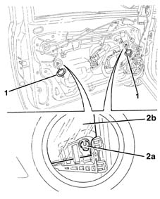
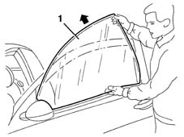

7005D14 front side door descending window glass - r r with door panel (and mount frame) removed
- Path
- Procedures > 70 FITTINGS > 7005 PASSENGER COMPARTMENT FRONT SIDE DOORS > 7005D front side door window glasses > 7005D14 front side door descending window glass - r r with door panel (and mount frame) removed
- Kind
- repair procedure (removal / refitting; the operation number is the code)
- Applies to
- all engines; all production periods
- Interactive page
- https://sloeber94.github.io/elrnDB-lYpsln/en/#/2429499
Applies to: all engines; all production periods
 Removing
Removing
 Refitting
Refitting1. Release and open the covers.
2. Release the retainers (2a) from the glass (2b).

Applies to: all engines; all production periods
1. Working carefully, lift up the glass and extract it from the outside of the door frame.

Applies to: all engines; all production periods
Refitting
RemovingCheck the condition of the glass, the fastenings and the sliding channels.
Position the glass in its housing.
Attach the retainers to the glass.
Refit the covers
Topics that link to this page (13)
- 5505B11 front door wiring - r r
- 7005A08 interior support frame of one side door r r with door panel removed
- 7005A09 front side door interior support farme r r
- 7005A28 front side door limiter- repair or replace
- 7005C08 front door exterior handle mount (one), lh or rh - r r
- 7005C09 front door outer handle mount (1), lh or rh - r r with door panel removed
- 7005C50 front side door interior opening mechnism r-r for repair or replacement with door panel removed
- 7005C51 front side door inner catch device - r+r for repair or replacement
- 7005D15 front side door descending window glass r r
- 7005M26 ONE FRONT DOOR ELECTRIC WINDOW MECHANISM', LEFT OR RIGHT - R.R .
- 7005N21 front side door lock motor-lock assembley-r r
- 7205E36 Stripping FRONT SIDE DOOR
- 7205E37 STRIPPING FRONT SIDE DOOR INNER SUPPORT FRAME